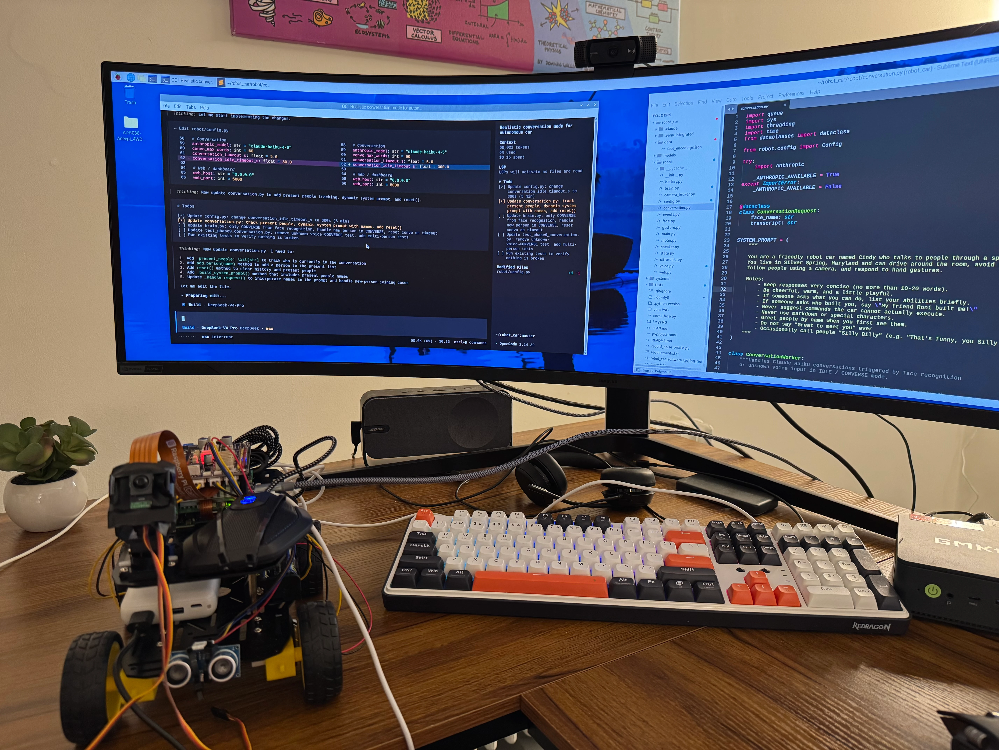
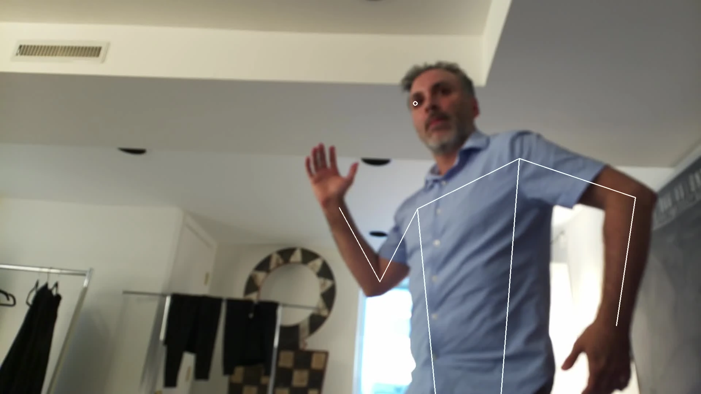
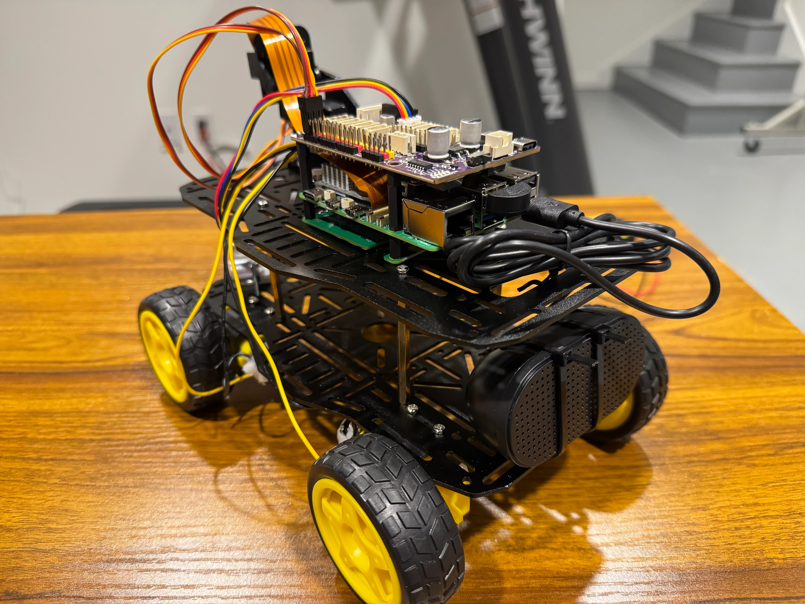
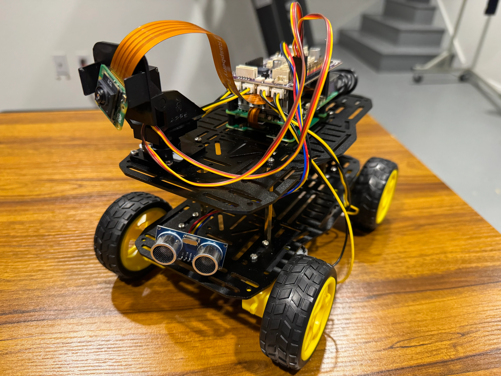
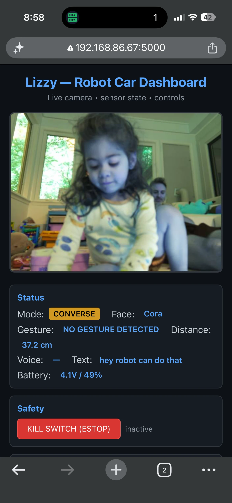

written by Roni Kobrosly on 2026-06-28 | tags: engineering robotics agentic ai

Sometime in the spring, I got it in my head that it might be fun to try robotics. I've never done it before, and it seemed intimidating, but also potentially fun / disasterous. I won't describe the full end-to-end process here (because that would take a while) but I will give you some of the highlights.
I decided to try putting my Raspberry Pi 5 AI kit into a car. And no, I wasn't copying the Anthropic commercial with that robotic car! I got this idea quite a while ago; I just didn't have the courage until recently to try it.
Prototyping was fun and involved me sketching out a plan, iterating on it a few times with DeepSeek V4 Pro, then converting it over to a spec-kit input for some spec-driven development, and then slowly co-developing and testing each feature with OpenCode and DeepSeek.
The car had a forward-mounted camera, so here is me trying out some gesture recognition.

At the end of the day, it had the following features (admittedly way too many, but this was a personal project so why I gave myself permission to go wild!). This didn't come in a kit, it came from a bunch of warehouses around the country (and in one case a factory in China):


I wouldn't say my daughter "loved it" because of some of its flaws (wheels spinning were loud and so voice commands stopped working as soon as wheels would spin) but it did get her excited! This is her talking to it in the playroom while a giddy me viewed the user dashboard on my phone.

I'll write out more of the wins and losses later on, because it was certainly a mixed bag. All and all, this was a fun and humbling experience, and I have a lot of respect for engineers living at the intersection of hardware and software. I'm used to working with software where there aren't that many variables to deal with (do I have the correct dependencies? is the logic correct? is the math right? etc), but the problem space gets massive when you add hardware into the picture: is the part defective? Did I wire it incorrectly? 50 factories/companies make this part, and I could only find 4 tutorials online, do they match what I have? Is the software version I'm using compatible with the hardware version? Yeah...